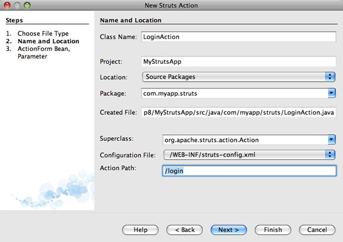
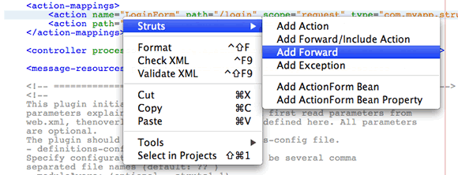
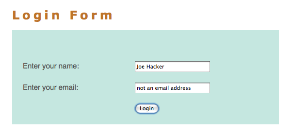

Apache NetBeans
Apache NetBeansLatest release
Введение в веб-платформу Struts
| This tutorial needs a review. You can open a JIRA issue, or edit it in GitHub following these contribution guidelines. |
Этот документ содержит пошаговое описание основ использования IDE NetBeans для разработки веб-приложений с помощью веб-платформы Struts. Struts — это платформа с открытым исходным кодом, которая расширяет интерфейс API сервлетов Java и использует архитектуру "Модель-представление-контроллер" (MVC). Она позволяет создавать поддерживаемые, расширяемые и гибкие веб-приложения, основанные на стандартных технологиях, таких как страницы JSP, компоненты JavaBeans, пакеты ресурсов и XML.
Данный курс призван научить сборке простого приложения MVC, которое отображает страницу ввода имени пользователя и возвращает страницу успешного входа после проверки правильности введенных данных. Вы изучите несколько основных функций, которые предлагает платформа Struts, а также способы внедрения этих функций с помощью среды IDE. В частности, будут использованы теги Struts на страницах JSP, данные пользователей будут поддерживаться компонентом Struts ActionForm, а логика пересылки будет реализована с помощью объекта Struts Action. Кроме того, будет показано, как внедрять в приложение простую проверку правильности, в том числе вывод предупреждения при неудачной попытке входа в систему.
Более подробное введение в платформу Struts приведено в статье Как работает Struts? на официальном веб-сайте Struts. Также можно воспользоваться поиском по указателю документации Javadoc среды IDE (Справка > Поиск в документации Javadoc по указателю) для просмотра интерфейса API платформы Struts, который поставляется вместе с библиотеками Struts.

Figure 1. Содержимое этой страницы применимо к IDE NetBeans 7.2, 7.3, 7.4 и 8.0
Для работы с этим учебным курсом требуются программное обеспечение и ресурсы, перечисленные ниже.
| Программное обеспечение или материал | Требуемая версия |
|---|---|
7.2, 7.3, 7.4, 8.0, Java EE |
|
7 или 8 |
|
Сервер GlassFish или Контейнер сервлетов Tomcat |
Open Source Edition 3.x или 4.0 _ _ версия 7.x или 8.x |
Примечания:
-
Установка среды IDE для Java позволяет при желании установить сервер GlassFish и контейнер сервлетов Apache Tomcat. Необходимо установить один из них (или зарегистрировать другой сервер в среде IDE), чтобы работать далее с этим учебным курсом.
-
Если необходимо сравнить проект с работающим решением, можно загрузить демонстрационное приложение.
Обзор приложения
При использовании Struts платформа предоставляет сервлет контроллера ActionServlet, который определяется в библиотеках Struts, входящих в среду IDE, и который автоматически регистрируется в дескрипторе развертывания web.xml, как указано ниже. Сервлет контроллера использует файл struts-config.xml для сопоставления входящих запросов с объектами Struts Action и использования любых объектов ActionForm, связанных с действием для временного хранения данных формы. Объект действия Action обрабатывает запросы с помощью метода execute, используя данные, хранящиеся в компоненте формы. После обработки запроса объектом действия Action объект обрабатывает запрос, сохраняет любые новые данные (например, в форме компонента или в отдельном компоненте результата) и пересылает результат в соответствующее представление.

Figure 2. Последовательность действий Struts
Разработка приложения Struts схожа с разработкой любого другого типа веб-приложений в IDE NetBeans. Однако можно дополнить набор инструментов веб-разработки, воспользовавшись поддержкой платформы Struts в среде IDE. Например, можно использовать шаблоны в среде IDE для создания объектов действия Action Struts и компонентов ActionForm. При создании среда IDE автоматически регистрирует эти классы в файле struts-config.xml и позволяет пользователю расширить этот файл без особых усилий с помощью элементов контекстного меню редактора исходного кода. Поскольку многие веб-приложения используют для представления страницы JSP, платформа Struts также предоставляет пользовательские библиотеки тегов, которые облегчают взаимодействие с формами HTML. В редакторе исходного кода среды IDE можно вызывать автозавершение кода и поддержку Javadoc, что помогает эффективно работать с такими библиотеками.
В следующих действиях показано, как создать простую форму, собирающую данные пользователя, выполняющую простую проверку правильности и выводящую данные на страницу успешного входа.
Настройка приложения Struts
В среде IDE приложение Struts является всего лишь обычным веб-приложением, которое сопровождается библиотеками Struts и файлами настройки. Приложение Struts создается точно так же, как и любые другие веб-приложения в среде IDE — с помощью мастера "Создать веб-приложение" с указанием в дополнительном действии, что в приложение нужно включить библиотеки Struts и файлы настройки.
-
Выберите "Файл > Новый проект" (CTRL+SHIFT+N; ⌘+SHIFT+N в Mac ОС) в главном меню. В списке 'Категории' выберите Java Web, затем выберите 'Веб-приложение' в списке проектов. Нажмите кнопку "Далее".
-
На панели выбора имени и расположения в поле "Имя проекта" введите
MyStrutsAppи нажмите кнопку "Далее". -
На панели "Сервер и параметры" выберите сервер, на котором нужно развернуть приложение. В списке представлены только те серверы, которые зарегистрированы в среде IDE. (Чтобы зарегистрировать сервер, нажмите кнопку "Добавить" рядом с раскрывающимся списком серверов.) Кроме того, обратите внимание, что контекстный путь к вашему развернутому приложению становится вида
/MyStrutsApp. Нажмите кнопку "Далее". -
На панели 'Платформы' выберите 'Struts'.

Figure 3. Параметр Struts отображается на панели 'Платформы' мастера создания веб-приложений
Поскольку это учебный проект, не меняйте никакие значения в нижней части панели. В мастере отображаются следующие параметры конфигурации.
-
Имя сервлета действия: Имя сервлета действия Struts, который используется в приложении. Дескриптор развертывания
web.xmlсодержит запись для сервлета действия и указывает соответствующие параметры Struts, например, путь к классу сервлетов в библиотеке Struts и к файлу настройкиstruts-config.xmlв приложении. -
Шаблон URL-адреса действия *: Указывает шаблоны входящих запросов, которые сопоставляются с контроллером действий Struts. Так создается запись сопоставления в дескрипторе развертывания. По умолчанию сопоставляется только шаблон
.do. -
Ресурс приложения: Позволяет указать набор ресурсов, который будет использоваться в файле
struts-config.xmlдля локализации сообщений. По умолчанию этоcom.myapp.struts.ApplicationResource. -
*Добавить файлы TLD Struts *: Позволяет создавать дескрипторы библиотеки тегов для библиотек тегов Struts. Дескриптор библиотеки тегов — это документ XML, содержащий дополнительные сведения обо всей библиотеке тегов, а также о каждом отдельном теге. В целом это не является необходимым, поскольку можно сослаться на оперативные идентификаторы URI, а не на локальные файлы TLD.
-
Нажмите кнопку "Завершить". Среда IDE создает папку проекта в вашей файловой системе. Как и в случае любого веб-приложения в среде IDE, папка проекта содержит все исходные коды и метаданные проекта среды IDE, например сценарий сборки Ant. Однако у веб-приложения, кроме того, в пути к классам есть все библиотеки Struts. Они не только есть в пути к классам приложения, но они также входят в проект и будут пакетированы с ним позднее при сборке проекта.
-
Проект откроется в среде IDE. Окно "Проекты" является основной точкой входа исходных файлов проекта. Показано логическое представление важного содержимого проекта. Например, если раскрыть несколько узлов в новом проекте, они могут выглядеть следующим образом:

Figure 4. В окне 'Проекты' отображается проект MyStrutsApp
*Примечание. *Используйте окно 'Файлы' (Window> 'Файлы'), чтобы просмотреть все содержимое проекта в представлении на основе каталогов.
Файлы настройки Struts, а также дескриптор развертывания приложения удобно расположены в папке файлов настройки. Откройте дескриптор развертывания (двойным щелчком узла файла web.xml, чтобы отобразить его в редакторе исходного кода). Для выполнения обработки в среде Struts для сервлета контроллера Struts предусмотрено сопоставление.
<servlet>
<servlet-name>action</servlet-name>
<servlet-class>org.apache.struts.action.ActionServlet</servlet-class>
<init-param>
<param-name>config</param-name>
<param-value>/WEB-INF/struts-config.xml</param-value>
</init-param>
<init-param>
<param-name>debug</param-name>
<param-value>2</param-value>
</init-param>
<init-param>
<param-name>detail</param-name>
<param-value>2</param-value>
</init-param>
<load-on-startup>2</load-on-startup>
</servlet>
<servlet-mapping>
<servlet-name>action</servlet-name>
<url-pattern>*.do</url-pattern>
</servlet-mapping>В приведенном выше примере контроллер Struts называется action и определяется в библиотеке Struts (org.apache.struts.action.ActionServlet). Он настроен на обработку всех запросов, которые удовлетворяют сопоставлению *.do. Кроме того, параметры инициализации сервлета указаны с помощью файла struts-config.xml, который также содержится в папке WEB-INF.
Создание страниц JSP
Для начала создайте две страницы JSP для приложения. Первая отображает форму. Вторая — это представление, которое возвращается при успешном входе в систему.
Создание страницы входа в систему
-
Щелкните правой кнопкой мыши узел проекта
MyStrutsApp, выберите пункт "Создать" > "JSP" и назовите новый файлloginНажмите кнопку "Завершить". Файлlogin.jspоткроется в редакторе исходного кода. -
В редакторе исходного кода измените содержимое тегов
<title>и<h1>(или<h2>, в зависимости от используемой версии среды IDE) наФорма входа в систему. -
Добавьте следующие две директивы библиотеки тегов к началу файла:
<%@ taglib uri="http://struts.apache.org/tags-bean" prefix="bean" %>
<%@ taglib uri="http://struts.apache.org/tags-html" prefix="html" %>Многие веб-приложения используют страницы JSP для представлений в парадигме MVC, поэтому платформа Struts предоставляет пользовательские библиотеки тегов, которые помогают взаимодействовать с формами HTML. Их можно легко применить к файлу JSP при помощи поддержки автозавершения кода в среде IDE. При вводе текста в редактор исходного кода среда IDE предлагает автозавершение кода для тегов Struts, а также документацию Javadoc по Struts. Автозавершение кода можно также инициировать вручную с помощью сочетания клавиш Ctrl-Space:

Figure 5. Функция автозавершения кода и Javadoc предоставлены для тегов Struts
Библиотека тегов компонента bean taglib содержит различные теги, которые можно использовать при ассоциировании компонента формы (например, компонента ActionForm) с данными, получаемыми с формы. Библиотека тегов html предлагает интерфейс между представлением и другими компонентами, необходимыми в веб-приложении. Например, ниже можно заменить обычные теги HTML form тегами Struts <html:form>. Благодаря этому, например, сервер ищет или создает объект компонента, соответствующий значению, указанному для элемента action в html:form.
-
Ниже тегов
<h1>или<h2>добавьте следующее:
<html:form action="/login">
<html:submit value="Login" />
</html:form>При завершении ввода текста в редакторе исходного кода можно дополнительно упорядочить код, щелкнув правой кнопкой мыши и выбрав 'Формат' (Alt-Shift-F).
-
В окне "Палитра" ("Окно" > "Палитра") в правой области среды IDE перетащите элемент "Таблица" из раздела HTML в точку чуть выше строки
<html:submit value="Login" />. Отобразится диалоговое окно вставки таблицы. Укажите число строк —3, столбцов —2и оставьте все остальные значения —0. Позднее в этом учебном курсе вы сможете добавить таблицу стилей для изменения отображения таблицы.

Figure 6. На палитре предоставлено диалоговое окно для простых в использовании шаблонов кода
Нажмите кнопку "ОК", а затем при желании переформатируйте код (Alt-Shift-F). Форма в файле login.jsp теперь выглядит таким образом:
<html:form action="/login">
<table border="0">
<thead>
<tr>
<th></th>
<th></th>
</tr>
</thead>
<tbody>
<tr>
<td></td>
<td></td>
</tr>
<tr>
<td></td>
<td></td>
</tr>
<tr>
<td></td>
<td></td>
</tr>
</tbody>
</table>
<html:submit value="Login" />
</html:form>*Примечание. *Строку таблицы <thead> можно безопасно удалить, поскольку она не используется в этом учебном курсе.
-
В первой строке таблицы введите следующее (изменения указаны жирным шрифтом):
<tr>
<td>*Enter your name:*</td>
<td>*<html:text property="name" />*</td>
</tr>-
Во второй строке таблицы введите следующее (изменения указаны жирным шрифтом):
<tr>
<td>*Enter your email:*</td>
<td>*<html:text property="email" />*</td>
</tr>Элемент html:text позволяет соотносить поля ввода из формы со свойствами в компоненте формы, который будет создан на следующем шаге. Так, например, значение элемента property должно соответствовать полю, объявленному в компоненте формы, связанном с этой формой.
-
Переместите элемент <html:submit value="Login" /> во второй столбец третьей строки таблицы, чтобы третья строка таблицы выглядела следующим образом (изменения выделены жирным шрифтом):
<tr>
<td></td>
<td>*<html:submit value="Login" />*</td>
</tr>На этом этапе форма входа в систему должна выглядеть следующим образом:
<html:form action="/login">
<table border="0">
<tbody>
<tr>
<td>Enter your name:</td>
<td><html:text property="name" /></td>
</tr>
<tr>
<td>Enter your email:</td>
<td><html:text property="email" /></td>
</tr>
<tr>
<td></td>
<td><html:submit value="Login" /></td>
</tr>
</tbody>
</table>
</html:form>Создание страницы успешного входа
-
Щелкните правой кнопкой мыши узел проекта
MyStrutsApp, выберите пункт "Создать" > "JSP" и назовите новый файлsuccess. В поле "Папка" щелкните соответствующую кнопку "Обзор" и выберите в диалоговом окне пунктWEB-INF. Нажмите кнопку "Выбрать папку", чтобы в поле "Папка" появилось значение WEB-INF. Любые файлы, содержащиеся в папке WEB-INF, не доступны напрямую для клиентских запросов. Чтобы файлsuccess.jspотображался надлежащим образом, он должен содержать обработанные данные. Нажмите кнопку "Завершить". -
В редакторе исходного кода измените содержание вновь созданной страницы на следующее:
<head>
<meta http-equiv="Content-Type" content="text/html; charset=UTF-8">
<title>Login Success</title>
</head>
<body>
<h1>Congratulations!</h1>
<p>You have successfully logged in.</p>
<p>Your name is: .</p>
<p>Your email address is: .</p>
</body>-
Добавьте директиву bean taglib к верхней части файла:
<%@ taglib uri="http://struts.apache.org/tags-bean" prefix="bean" %>-
Добавьте следующие теги
<bean:write>(изменения выделены жирным шрифтом):
<p>Your name is: *<bean:write name="LoginForm" property="name" />*.</p>
<p>Your email address is: *<bean:write name="LoginForm" property="email" />*.</p>Задействовав теги <bean:write>, вы используете библиотеку тегов компонента для поиска компонента ActionForm, который нужно создать, и для отображения данных пользователя, сохраненных в name и email.
Создание компонента ActionForm
Компонент Struts ActionForm используется для сохранения данных между запросами. Например, если пользователь отправляет форму, то данные временно сохраняются в компоненте формы, чтобы они могли быть либо заново отображены в странице формы (если данные введены в неправильном формате или если вход в систему выполнен неуспешно) или отображаются на странице успешного входа в систему (если данные проходят проверку правильности).
-
Щелкните правой кнопкой мыши проект
MyStrutsAppи выберите пункт "Создать" > "Другое". В разделе "Категории" выберите пункт Struts, а затем в поле "Типы файлов" выберите "Компонент Struts ActionForm". Нажмите кнопку "Далее". -
Введите
LoginFormв поле имени класса. Затем выберитеcom.myapp.strutsв раскрывающемся списке "Пакет" и нажмите кнопку "Готово".
Среда IDE создает компонент LoginForm и открывает его в редакторе исходного кода. По умолчанию среда IDE создает его со строкой String с именем name и целым числом int с именем number. Для обоих полей есть определенные методы доступа. Также среда IDE добавляет объявление компонента к файлу struts-config.xml. Если открыть файл struts-config.xml в редакторе исходного кода, то можно увидеть следующее объявление, добавленное мастером:
<form-beans>
*<form-bean name="LoginForm" type="com.myapp.struts.LoginForm" />*
</form-beans>Среда IDE обеспечивает поддержку переходов в файле struts-config.xml. Удерживая клавишу Ctrl, наведите указатель мыши на полное имя класса компонента LoginForm. Имя становится ссылкой, что позволяет перейти прямо к классу в редакторе исходного кода.

Figure 7. Поддержка переходов предоставлена в struts-config.xml
-
В компоненте
LoginFormв редакторе исходного кода создайте поля и сопутствующие методы доступа, соответствующие полям текстового вводаnameиemail, созданным в файлеlogin.jsp. Поскольку полеnameуже создано в скелетеLoginForm, нужно реализовать только полеemail.
Добавьте следующее объявление ниже поля name (изменения выделены жирным шрифтом):
private String name;
*private String email;*Чтобы создать методы доступа, наведите курсор на email и нажмите сочетание клавиш Alt-Insert.

Figure 8. Меню 'Вставить код' отображается при нажатии Ctrl-I в редакторе исходного кода
Выберите пункт "Методы получения и установки", а затем в появившемся диалоговом окне выберите email : String и нажмите кнопку "Создать". Для поля email создаются методы доступа.
*Примечание *. Можно удалить методы declaration и accessor для number, поскольку они не используются в этом учебном курсе.
Создание класса действия Action
Класс действия Action содержит бизнес-логику в приложении. При получении данных из формы именно метод execute в объекте Action обрабатывает данные и определяет, в какое представление переслать обработанные данные. Поскольку класс Action входит в состав платформы Struts, IDE NetBeans содержит мастер.
-
В окне 'Проекты' щелкните правой кнопкой мыши узел проекта
MyStrutsAppи выберите 'Создать' > 'Другие'. Из категории Struts выберите пункт Struts Action и нажмите кнопку "Далее". -
На панели "Имя и расположение" измените имя на
LoginAction. -
Выберите
com.myapp.strutsв раскрывающемся списке "Пакет". -
Введите
/loginв пути действия. Значение должно соответствовать значению, указанному для атрибутаactionв тегах<html:form>в файлеlogin.jsp. Выставьте параметры, как указано на снимке экрана ниже, а затем нажмите кнопку "Далее".

Figure 9. Мастер создания действий Struts
-
В третьем действии этого мастера предоставляется возможность ассоциировать класс
Actionс компонентом формы. Обратите внимание, что ранее созданный компонентLoginFormуказан как вариант для пункта "Имя компонента ActionForm". Внесите на панель следующие изменения:-
Удалите прямую косую черту из поля "Входной ресурс"
-
Укажите область запроса (Сеанс — это область запроса по умолчанию в платформе Struts.)
-
Снимите флажок "Проверить компонент ActionForm" Нажмите кнопку "Завершить". Создается класс
LoginAction, и файл открывается в редакторе исходного кода. Также обратите внимание, что следующая записьactionдобавляется к файлуstruts-config.xml:
-
<action-mappings>
*<action name="LoginForm" path="/login" scope="request" type="com.myapp.struts.LoginAction" validate="false"/>*
<action path="/Welcome" forward="/welcomeStruts.jsp"/>
</action-mappings>Атрибуты name и scope относятся к компоненту формы, связанному с действием. В частности, когда входящий запрос соответствует выражению /login, платформа Struts автоматически создает объект LoginForm и населяет его данными формы, которые были отправлены в запросе. Для validate устанавливается по умолчанию значение true. Благодаря этому платформа вызывает метод validate из компонента формы. Но соответствующий флажок в мастере снят, поскольку в следующем действии будет вручную написан код простой проверки, для которого не требуется метод validate.
Реализация проверки правильности
В редакторе исходного кода пройдите по классу LoginAction и посмотрите на метод выполнения execute:
public ActionForward execute(ActionMapping mapping, ActionForm form,
HttpServletRequest request, HttpServletResponse response)
throws Exception {
return mapping.findForward(SUCCESS);
}Обратите внимание на определение SUCCESS, указанное под объявлением класса LoginAction:
private final static String SUCCESS = "success";Сейчас метод mapping.findForward настроен на безусловную пересылку любого запроса в представление вывода под названием success. Это не очень желательно, ведь лучше сперва провести некоторую проверку входящих данных, чтобы определить, отправлять ли представление success или какое-то другое представление.
Доступ к данным компонента и подготовка условия пересылки
-
Введите следующий код в тело метода
execute:
// extract user data
LoginForm formBean = (LoginForm)form;
String name = formBean.getName();
String email = formBean.getEmail();Чтобы использовать входящие данные формы, необходимо взять аргумент ActionForm из execute`и привести его к `LoginForm, затем применить методы получения, которые уже созданы ранее.
-
Введите следующее условие для выполнения проверки входящих данных:
// perform validation
if ((name == null) || // name parameter does not exist
email == null || // email parameter does not exist
name.equals("") || // name parameter is empty
email.indexOf("@") == -1) { // email lacks '@'
return mapping.findForward(FAILURE);
}На этом этапе метод execute должен выглядеть так:
public ActionForward execute(ActionMapping mapping, ActionForm form,
HttpServletRequest request, HttpServletResponse response)
throws Exception {
// extract user data
LoginForm formBean = (LoginForm) form;
String name = formBean.getName();
String email = formBean.getEmail();
// perform validation
if ((name == null) || // name parameter does not exist
email == null || // email parameter does not exist
name.equals("") || // name parameter is empty
email.indexOf("@") == -1) { // email lacks '@'
return mapping.findForward(FAILURE);
}
return mapping.findForward(SUCCESS);
}-
Добавьте объявление
FAILUREк классуLoginAction(изменения выделены жирным шрифтом):
private final static String SUCCESS = "success";
*private final static String FAILURE = "failure";*Используя вышеуказанную логику, метод execute пересылает запрос в представление success, если пользователь предоставляет данные для полей name и email, а поле электронной почты содержит знак "@". В противном случае пересылается представление failure. Как будет указано ниже в разделе Добавление записей forward к struts-config.xml, можно указать представление failure, которое будет указывать на страницу формы, чтобы пользователь мог снова ввести данные в правильном формате.
Настройка сообщения об ошибке
Если возвращается форма входа, то будет полезно сообщить пользователю, что проверка не пройдена. Это можно сделать, добавив поле error к компоненту формы и соответствующий тег <bean:write> к форме в login.jsp. Наконец, в объекте Action укажите отображение сообщения об ошибке в случае выбора представления failure.
-
Откройте
LoginFormи добавьте к классу полеerror:
// error message
private String error;-
Добавьте методы получения и установки для
error, как указано выше. -
Измените метод установки, чтобы он выглядел следующим образом:
public void setError() {
this.error =
"<span style='color:red'>Please provide valid entries for both fields</span>";
}-
Откройте
login.jspи внесите следующие изменения:
<html:form action="/login">
<table border="0">
<tbody>
*<tr>
<td colspan="2">
<bean:write name="LoginForm" property="error" filter="false"/>
&nbsp;</td>
</tr>*
<tr>
<td>Enter your name:</td>
<td><html:text property="name" /></td>
</tr>-
В
LoginActionв рамках блокаifдобавьте оператор, устанавливающий сообщение об ошибке, перед пересылкой условияfailure(изменения выделены жирным шрифтом):
if ((name == null) || // name parameter does not exist
email == null || // email parameter does not exist
name.equals("") || // name parameter is empty
email.indexOf("@") == -1) { // email lacks '@'
*formBean.setError();*
return mapping.findForward(FAILURE);
}Завершенный класс LoginAction должен теперь выглядеть следующим образом:
public class LoginAction extends org.apache.struts.action.Action {
private final static String SUCCESS = "success";
private final static String FAILURE = "failure";
public ActionForward execute(ActionMapping mapping, ActionForm form,
HttpServletRequest request, HttpServletResponse response)
throws Exception {
// extract user data
LoginForm formBean = (LoginForm)form;
String name = formBean.getName();
String email = formBean.getEmail();
// perform validation
if ((name == null) || // name parameter does not exist
email == null || // email parameter does not exist
name.equals("") || // name parameter is empty
email.indexOf("@") == -1) { // email lacks '@'
formBean.setError();
return mapping.findForward(FAILURE);
}
return mapping.findForward(SUCCESS);
}
}Добавление записей forward к struts-config.xml
Чтобы приложение соответствовало страницам JSP с условиями пересылки, возвращенными методом исполнения LoginAction execute, необходимо добавить записи forward к файлу struts-config.xml.
-
Откройте
struts-config.xmlв редакторе исходного кода, щелкните правой кнопкой мыши в любом местоположении в записиactionдляLoginFormи выберите Struts > 'Добавить Forward'.

Figure 10. Щелкните правой кнопкой мыши и выберите Struts > 'Добавить Forward'
-
В диалоговом окне "Добавить Forward" введите
successв поле "Имя пересылку". Укажите путь к файлуsuccess.jspв поле файла ресурсов (напр.,/WEB-INF/success.jsp). Диалоговое окно должно теперь выглядеть следующим образом:

Figure 11. В диалоговом окне 'Добавить Forward' создается запись Forward в struts-config.xml
Нажмите кнопку "Add". Обратите внимание, что следующая запись forward была добавлена к файлу struts-config.xml (изменения выделены жирным шрифтом):
<action name="LoginForm" path="/login" scope="request" type="com.myapp.struts.LoginAction" validate="false">
*<forward name="success" path="/WEB-INF/success.jsp"/>*
</action>-
Выполните такое же действие, чтобы добавить запись пересылки для
failure. Укажите в пути к файлу ресурсов/login.jsp. Следующая записьforwardдобавляется к файлуstruts-config.xml(изменения выделены жирным шрифтом):
<forward name="success" path="/WEB-INF/success.jsp"/>
*<forward name="failure" path="/login.jsp"/>*Настройка и выполнение приложения
Среда IDE использует сценарий сборки Ant для сборки и выполнения вашего веб-приложения. Среда IDE создала сценарий сборки при создании проекта на основании параметров, указанных в мастере создания проекта. Перед сборкой и выполнением приложения необходимо указать для приложения точкой входа по умолчанию login.jsp. Можно дополнительно добавить к проекту простую таблицу стилей.
Настройка страницы приветствия
-
В окне 'Проекты' дважды щелкните дескриптор развертывания
web.xml. Перечисленные наверху редактора исходного кода вкладки предоставляют интерфейс к файлуweb.xml. Щелкните вкладку "Страницы". В поле "Файлы приветствия" введитеlogin.jsp.

Figure 12. Графический редактор для дескриптора развертывания приложения
Теперь перейдите на вкладку 'Исходный код' для просмотра файла. Обратите внимание, что login.jsp теперь указан в записи welcome-file:
<welcome-file>login.jsp</welcome-file>Присоединение таблицы стилей
-
Добавьте к проекту простую таблицу стилей. Это можно легко сделать, сохранив этот пример таблицы стилей на компьютер. Скопируйте файл (Ctrl-C), а затем в среде IDE выберите узел веб-страницы в окне "Проекты" и нажмите Ctrl-V). Файл добавляется к вашему проекту.
-
Свяжите таблицу стилей со страницами JSP, добавив ссылку между тегами
<head>как вlogin.jsp, так и вsuccess.jsp:
<link rel="stylesheet" type="text/css" href="stylesheet.css">Запуск приложения
-
В окне "Проекты" щелкните правой кнопкой мыши узел проекта и выберите команду "Выполнить". Среда IDE собирает веб-приложение и развертывает его, используя сервер, указанный при создании проекта Страница
login.jspбудет открыта и отображена в браузере. Введите какие-то данные, которые должны не пройти проверку, например, оставьте одно поле пустым или введите адрес электронной почты без знака "@":

Figure 13. Форма содержит данные, которые не пройдут проверку правильности
При нажатии кнопки "Вход" страница формы входа отображается заново и содержит сообщение об ошибке:

Figure 14. Форма повторно отображается с сообщением об ошибке
Попробуйте ввести данные, которые должны пройти проверку. После нажатия кнопки "Вход" вы видите страницу успешного входа:

Figure 15. Отображается страница успешного завершения, на которой отображаются входные данные
Дополнительные сведения
На этом завершается введение в платформу Struts в IDE NetBeans. В этом документе описывается создание простого веб-приложения MVC в IDE NetBeans с помощью платформы Struts и описывается интерфейс IDE для разработки веб-приложений. Было показано, как использовать теги Struts на страницах JSP, временно хранить данные пользователя в компоненте Struts ActionForm и внедрять логику пересылки с помощью объекта действия Struts Action. Кроме того, будет показано, как внедрять в приложение простую проверку правильности, в том числе вывод предупреждения при неудачной попытке входа в систему.
Учебные курсы на смежные темы приведены в следующих материалах:
-
Добавление поддержки веб-платформы. В общем руководстве описывается добавления поддержки веб-платформ к IDE NetBeans с помощью диспетчера подключаемых модулей.
-
Введение в веб-платформу Spring. Описываются основы использования IDE NetBeans для разработки веб-приложений с помощью платформы Spring.
-
Введение в JavaServer Faces 2.0. Документ с описанием способов присоединения управляемого компонента к веб-страницам и использования преимуществ шаблонов Facelets.